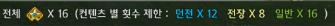

這次改版新增了許多新系統，
分別為：
每日玩法引導系統(Play guide)
新水晶"神器水晶"合成
全新裝備強化系統
本頁面將會陸續一一介紹以上。
其一，每日玩法引導系統(Play guide)，
這次改版非常重要的系統之一，
具有4項特色：高經驗值/裝備素材/輕鬆配對/豐富獎勵。
遊玩內容分成：副本/一般任/戰場等3種。
【介面說明】
1.完成條件可得到的獎勵
這個背景每當你完成條件後，就會換另一個。
獎勵非常多元，依序為：
LV60送7日火馬和經驗卷、7日時裝、7日時裝武器、力量飾品水晶、
61技能高級紋章*2、64技能高級紋章*2、LV65整套飾品、LV65補給裝備
獎勵非常豐富，也適合剛練上來的新手裝備不會落後於人。
2.累計登入BUFF
3天、5天、7天登入皆會有BUFF，對任務進行很有幫助。
3天加跑速20、5天加HP 5%、7天加攻速6%
(BUFF會維持一週，每週刷新登入BUFF)
3.累積20場每日任獎勵
任意20場會獲得上圖獎勵。
4.每日任場次
每天進行每日任有場次限制會顯示在下圖(16場)
當超過限制後會沒有經驗值，只會剩金錢獎勵。
5.每日任信用點數
每日任的信用點數目前非常重要，
它累積的就是北東大陸的"봐루키온偵查隊信用點數"，
偵查隊信用點數可換各項飾品、65水晶及神話水晶原石(神器水晶系統會介紹)
6.報酬
以LV60來說，一場每日引導任會給你5000~8700萬不等，
對玩家來說透過這個每日引導任可以輕鬆成長。
7.達成每日引導任後記得點下這個藍色按鍵領報酬
---------------------------------------------------------------------------------------------------------------------------------------------------------------------------------------
其二，新水晶"神器水晶"合成
神器水晶具有角色死亡不會爆的特性，
合成後具有"隨機的雙屬性"神器水晶。
【"神器水晶"合成系統】
使用同階武器/防具水晶x3個，不得以武器或防具水晶混用(以下皆用7階示範)
在合成7階神器水晶中間欄位所需的"原石"有分2種：
綠色等級的"原石"--此原石無法合神器水晶
需藍色等級的"原石"(合成100%成功)
"LV65 7階水晶3個"和藍色等級的"原石"合成新的"7階神器水晶"
見下圖：合成後的"7階神器水晶"有"雙屬性"(但皆為隨機)
---------------------------------------------------------------------------------------------------------------------------------------------------------------------------------------
其三，全新裝備強化系統
一、裝備階數重新定義
裝備階數皆重新定義，如下圖紅圈:左邊是5階，右邊是6階。
先看一下原裝備轉換後的對應關係表：
原01～05階裝備=1階
原06～09階裝備=2階
原10～12階裝備=3階
原13～14階裝備=4階
原15階裝備=5階
二、強化石
強化石=原裝備祭品，這個新實裝有2個好處：
1.可將裝備分解成強化石節省倉庫空間
2.強化石有增加強化成功率的功效。
【裝備分解成強化石對應表】
先看一對應原1～15階轉換成該等級"強化石"的關係表：
原01～05階裝備=等級1"強化石"
原06～09階裝備=等級2"強化石"
原10～12階裝備=等級3"強化石"
原13～14階裝備=等級4"強化石"
原15階裝備=等級5"強化石"
下圖為等級3"強化石"
【強化石如何取得】
新包包中利用中間的icon可以直接分解裝備：
強化石取得有5個方法：
1.既有裝備分解轉換
2.舊有分解粉轉換
3.透過分解已強化的裝備還原
這次實裝強化裝備的賣點之一，
大多數人一改版舊有裝備就放在倉庫不使用了，
但現在已強化(+1~12)舊有裝備也能分解還原成為"強化石"，
還原數量會寫在裝備上{下圖位置)讓你很容易了解。
例如：+0手可還原24、+6手可還原58 (上圖左)、+9手可還原203(上圖右)
4.每日玩法引導系統獎勵取得
剛剛上面提過的每日玩法引導系統，其獎勵就包含"強化石"。
5.任務獎勵
LV60~65的升等過程，官方十分貼心，只要你照著任務走到LV65時，
任務給的4階強化石都1000多個，強化劑也有數百個，
要強化一整套62(4階)新手裝用不到一半還有剩。
【5階強化石換6階強化石】
強化石可以以6:1的比例，按右鍵可直接合成更高階級的強化石。
如5階強化石6個可合成6階強化石1個。
在強化石道具上按住SHIFT+右鍵可一次轉換~
三.強化劑
原一般、名品粉、完整粉等皆統合為強化劑。
【強化劑等級對應】
你要強化5階裝備就要使用5階強化劑，
見下圖:各村莊雜貨店能買到3、4、5、6階強化劑，
3階強化劑可用於1、2階。
強化5階裝備使用15個粉，所以由於5階強化劑1個是3.21金，
強化5階裝備+6~9強化1次是44.94金，
比起之前12金X14=168金省了1/4的金。
本次新系統說明至此結束，內容皆於引用於神谷(kcmws)所註，已經作者同意，請勿轉載。